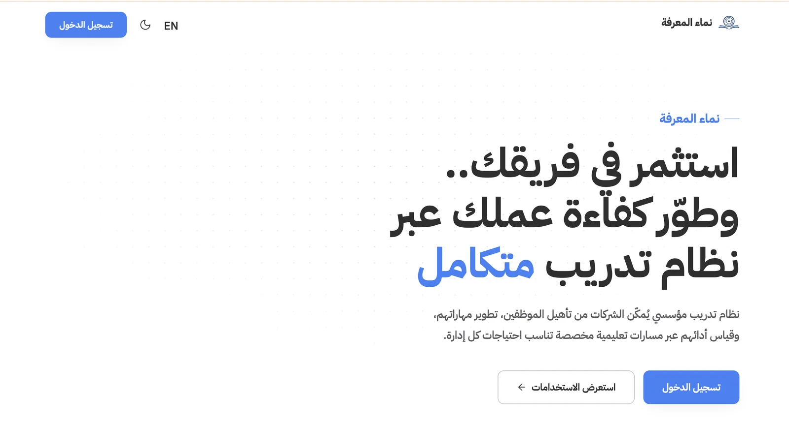
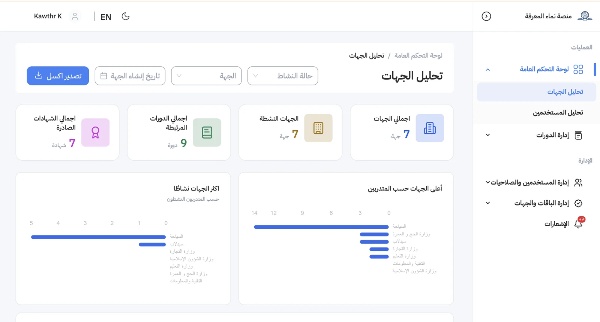
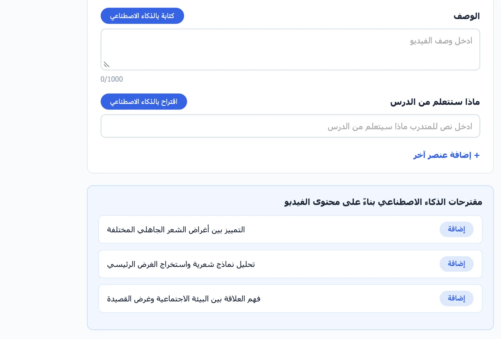
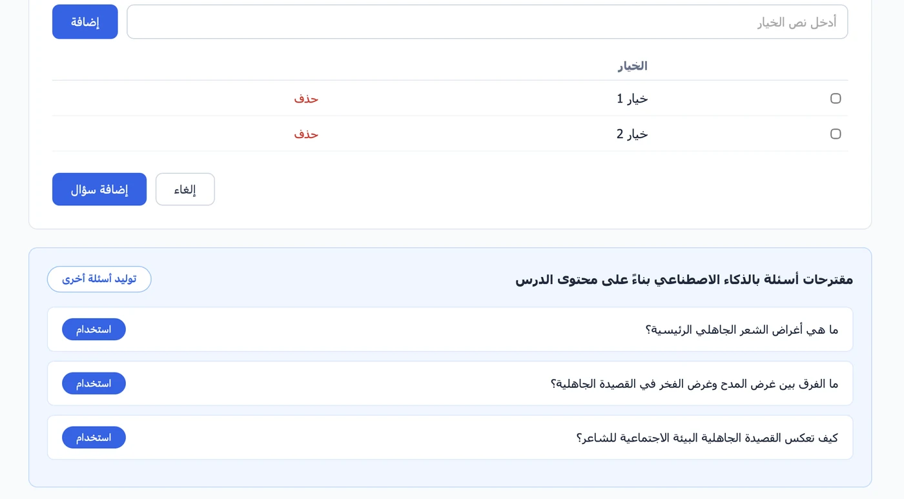

SeedLab · Employee-training platform
Nama Al-Ma’rifa
AIFront-EndManagement
A corporate training platform for a government client. Employees learn through courses and videos, with assessment questions generated from the content.
- Built the AI modules: a video analyzer that writes lesson descriptions and suggests learning outcomes from the video, and an LLM question generator (Qwen) that suggests quiz questions from the lesson content.
- Deployed both on GPU Hugging Face Spaces and connected them to the Django backend through an asynchronous worker queue.
- Built front-end interfaces in React.
- Led project management for the platform.
QwenHugging Face SpacesDockerDjangoReactProduction code is confidential. Happy to walk through the design in an interview.


AI feature architecture
Django backendAdmin uploads course content
→
Task queueJob saved as queued
→
AI workerPulls jobs, calls the Spaces
→
GPU SpacesQuestion generator (Qwen) · Video analyzer

